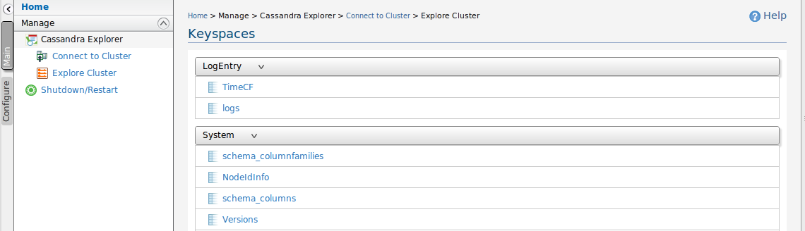
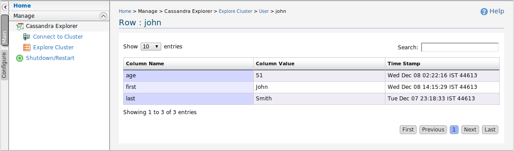

WSO2 Carbon Cassandra Explore feature provides a convenient way to explore data resides in Cassandra Database with a user friendly GUI. A user can use this tool to view rows and also to explore columns in it.
Cassandra Explorer provides a comprehensive search to explore your data quickly in a Cassandra Cluster.
Home> Manage> Cassandra Explorer> Connect to Cluster
First you need to connect to a cluster to explore data. Click on the connect to Cluster
on management menu. please provide following details to connect and click connect button.
connection url (required) : connection url of the Cassandra cluster with ip and port.
eg: localhost:9160 , 10.8.99.101:9161
username (optional) : username of the Cassandra cluster.
password (optional) : password of the Cassandra cluster.
Maximum Result Count : Maximum results retrieved from Cassandra cluster. default value is 1000
Figure 1: Connect to a Cassandra Cluster
Home> Manage> Cassandra Explorer> Explore Cluster
After connecting to a cluster click on Explore cluster to list available keyspaces to select. you can click on a keyspace to explore from the collapsible list.
Figure 2: Explore a connected Cluster
when you click on a Column family in Keyspace listing it will navigate to page which displays
rows
in the column family. In this page you can search for rows with a given name.
You can navigate
easily
through full numbered pagination.

Figure 3: Explore rows of a selected Column Family
When you click on view more in the row listing you will navigate to comprehensive column explorer which facilitate to search column data across the row.
Figure 4: Explore columns of a row